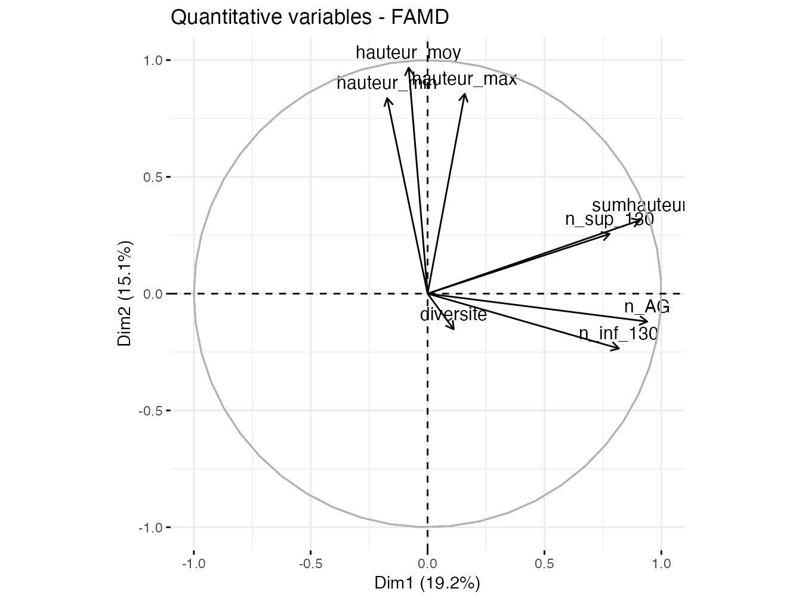
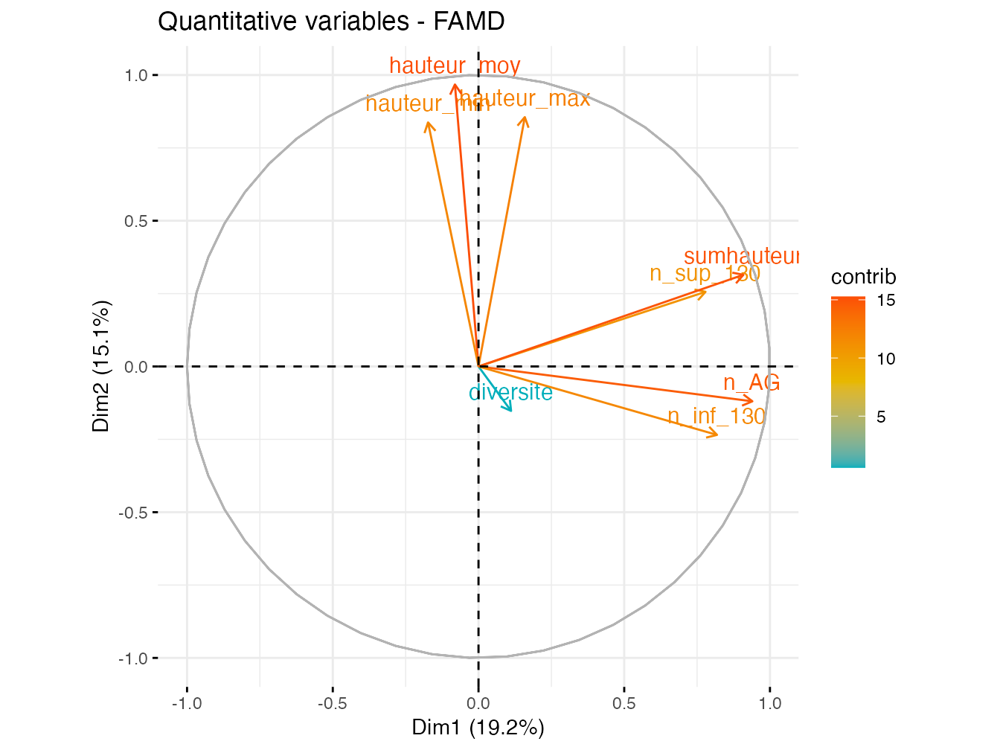
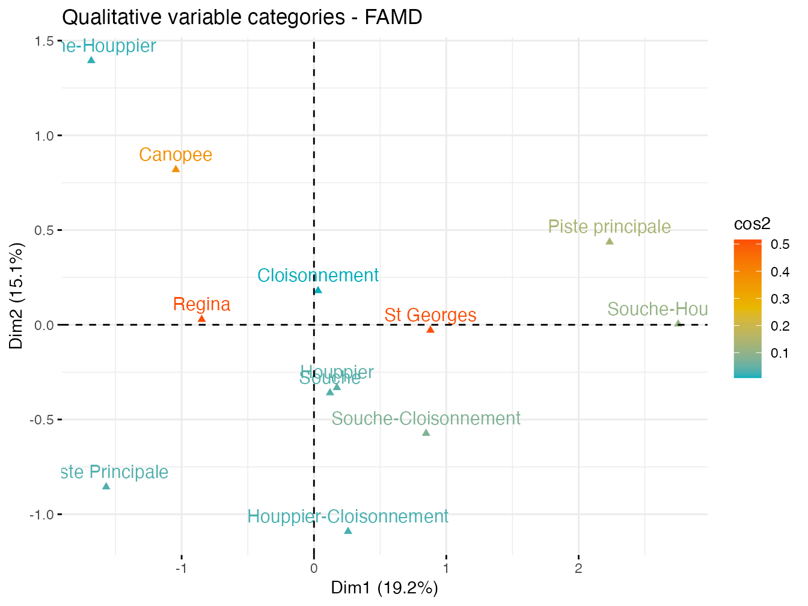
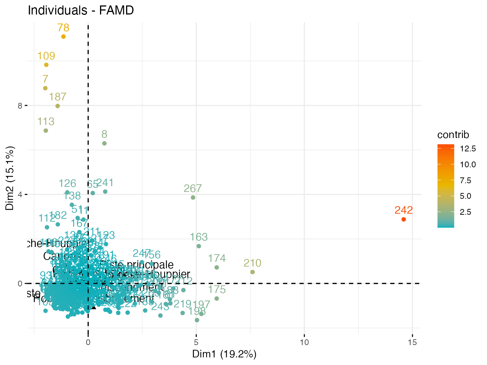
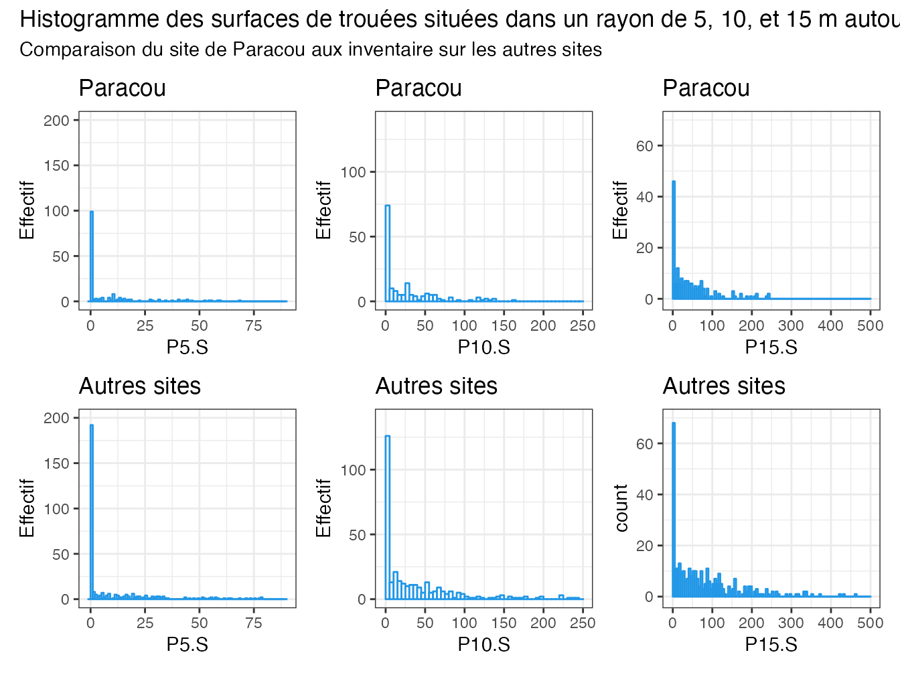

1 Point d’étape: 3e semaine de stage
1.1 Problématique du stage
En Guyane française, les espèces exploitées ont majoritairement un comportement semi-héliophile, c’est à dire que les jeunes stades de développement ont besoin de lumière pour croître mais peuvent entrer en stade d’attente en l’absence de celle ci. De plus, l’exploitation forestière en forêt tropicale a principalement lieu en des forêts peu perturbées. Afin de garantir la durabilité de la ressource en bois il est donc nécessaire que les méthodes d’exploitation forestières permettent la régénération des espèces exploitées, pour garantir le potentiel de reproduction de ces dernières. Dans le cas des forêts guyanaises, cela passe par le maintien d’une dynamique de peuplement le plus proche possible de la dynamique naturelle (Guitet, Brunaux, and Traissac 2014). La norme pour les aménagements forestiers est aujourd’hui l’Exploitation Faible Impact (EFI) depuis 2010 (ONF 2017). Cette méthode doit garantir « une opération d’exploitation forestière intensément planifiée, précautionneusement mise en œuvre et contrôlée afin de minimiser son impact sur le peuplement et les sols forestiers, et se basant habituellement sur une sélection des individus à abattre» (FAO,2004 in (ONF 2017)). Les préconisations liées à l’exploitation sont ainsi réunies dans la Charte EFI: désignation, exploitation d’une faible densité de tige à l’hectare, rotations de 65 ans…
La modélisation de la structure et de la dynamique des peuplements peut contribuer à évaluer les impacts de l’exploitation et des autres perturbations d’origine anthropique ou climatique sur les peuplements forestiers (Fargeon et al. 2016),(Fischer et al. 2016),(Gourlet-Fleury et al. 2005). Or, un des manques de ces modèles concerne les stades de développement des arbres de diamètre inférieurs à 10 cm (Gourlet-Fleury et al. 2005). En effet, peu de données exploitables sont disponibles sur la croissance et les affinités environnementales de ces stades ontogéniques, et la majorité des modèles de croissance ne permettent l’analyse des dynamiques de peuplement qu’à partir des classes de diamètre supérieures à 10cm (Herault et al. 2010).
La lumière disponible est un des principaux facteurs abiotiques influençant la présence de plantules et le développement de juvéniles établis. Or, en forêt tropicale humide, la mise en lumière de la régénération se fait principalement à proximité de zone de trouées ou « chablis ». L’ouverture de trouées provient d’une part de phénomènes naturels tels que la chute d’arbres brisés ou déracinés, la chute de grosses branches ; l’exploitation forestière génère également des trouées à l’emplacement des arbres exploités, des pistes et des places de retournement ou de dépôt. La réponse de la régénération au gradient de lumière généré par les trouées a fait l’objet de nombreuses études (Poorter 1999), (Sheil et al. 2006) ,(Rüger et al. 2011),(Laurans et al. 2012),(Zhu, Lu, and Zhang 2014).
Pourtant, peu d’études ont inclut le facteur lumière dans la modélisation de la démographie des espèces, car ce facteur présente de fortes variabilités temporelles et spatiales (Ferment et al, 2001),(Hérault,2010). Aujourd’hui, l’accès à des données LiDAR permet l’obtention de mesures précises et objectives des trouées dans la canopée et constitue une réelle opportunité pour la compréhension de la démographie des espèces dépendantes à la lumière, dont les espèces semi-héliophiles (Hunter et al. 2015),(Goulamoussene 2017),(Pinagé et al. 2019),(Stark et al. 2015).
La thèse intitulée « Effet de la dynamique de canopée de forêt exploitée sur les populations d’espèces d’arbres récoltées en Guyane », en appui duquel a lieu ce stage, va aborder la question de la modélisation de la croissance des individus de diamètre supérieur à 10 cm pour 11 espèces considérées comme semi-héliophiles, dont 7 appartiennent aux Essences Commerciales Majeures Principales(ECMP) en intégrant le facteur lumière. La problématique du stage est donc la suivante: Comment modéliser le recrutement des espèces semi-héliophiles étudiées en prenant en compte le facteur lumière? Les modèles de recrutement obtenus seront dans une étape ultérieure intégrés à un simulateur de dynamique du peuplement. Les individus étudiés ici sont regroupés sous le terme de “juvéniles”, et correspondent aux tiges de plus de 30cm de haut et au diamètre inférieur à 10cm.
Ainsi, ce stage a pour objectif de répondre aux questions suivantes :
- Quelles variables retenir pour caractériser la présence de la régénération d’espèces ligneuses exploitées au stade juvénile? La lumière étant un facteur environnemental important pour la croissance des individus, quelles sont les conditions de lumière qui déterminent l’établissement de la régénération de l’espèce étudiées ? En particulier, qu’en est-il pour les espèces dont les juvéniles ont un caractère semi-héliophiles ?
Pour chacune des espèces semi-héliophiles étudiées, il s’agit d’une part d’identifier les variables à expliquer, ainsi que les variables explicatives.
Parmi les variables à expliquer, plusieurs ont déjà étés étudiées avec des résultats variables selon l’espèce et le site d’étude :
Nombre d’individus par espèce.
Densité d’individus par espèce à l’hectare.
Hauteur moyenne, médiane et cumulée des individus.
Plusieurs variables explicatives de l’influence de la lumière sont envisagées :
Distance de la placette à la trouée.
Surface de la trouée la plus proche.
Proportion de la surface de la placette impactée par la trouee (création de zones tampon de 5, 10 ou 15 m autour de la trouee et analyse de la surface de recouvrement entre les zones tampon et la placette).
Intersection d’une zone tampon autour de la placette avec les trouées (création de zones tampon de 5, 10 ou 15 m autour de la placette et analyse de la surface de recouvrement entre les zones tampon et la trouee).
Hauteur moyenne, dominante, quartiles de la hauteur des arbres de la canopée entourant la trouée, mesurés dans des zones tampon autour de la trouée.
Des variables explicatives autres que des proxy de la lumière sont envisagées
Un des indice les plus utilisé pour mesurer le stade ontogénique d’un individu est le rapport DBH/DBH95. Or, il est connu que les juvéniles ont une plus forte croissance en hauteur qu’en diamètre; il serait donc intéressant de créer un indice Hauteur/Hauteur maximum (La hauteur maximum(Hmax) correspondant à la hauteur Maximum de l’espèce obtenu a partir d’un équation d’allométiee prenant en compte le DBH 95.
La compétition vis-à-vis des espèces ligneuses présentes dans la régénération, autres que celles étudiées.
Le Topographic Wetness Index (TWI) pour quantifier l’effet de la topographie.
Des modèles Zero-inflated Poisson seront construits à partir des variables les plus pertinentes pour chaque espèce.
- Comment intégrer les informations obtenues aux étapes précédentes dans un modèle de recrutement ?
Il s’agira de construire le modèle de recrutement le plus adapté pour chaque espèce. Pour cela, nous évaluerons entre autres comment simuler les variables explicatives retenues et fixer le nombre d’arbres recrutés en cohérence avec les données démographiques connues des arbres de diamètre supérieur à 10 cm.
1.2 Déroulé du stage
Afin de répondre aux questions précédentes, le stage est divisé en une phase d’inventaire de terrain et une phase d’analyse et de modélisation. Le planning du stage est décrit sur la figure suivante.

Figure 1.1: Chronogramme du stage
Le terrain se fera dans les forêts de Paracou et Régina Saint-Georges, pour lesquelles sont disponibles des données d’inventaires des arbres adultes, ainsi que des données issues du LiDAR à partir desquelles une pré-identification des zones de trouées est faite.
Protocole d’échantillonnage :
Les trouées de plus de 10 m2 sont préalablement repérées via le Modèle Numérique de Canopée (MNC) issu des données LiDAR. Ces trouées sont donc géoréférencées. Lors de la phase terrain, chacune de ces trouées est parcourue. Un inventaire est réalisé dans les cas où un semencier d’une des espèces cibles est présent à proximité de la trouées, et si des individus juvéniles de notre liste d’espèce sont présents à proximité de la trouée.
Effort d’échantillonnage:
En moyenne, 12 placettes d’inventaire sont réalisable pour deux opérateur en une journée de terrain.
12 semaines soit 60 jours de terrain sont prévus, une marge de quelques jours étant nécessaire du fait des conditions météorologiques. Ainsi, 720 placettes pourront, au maximum, être réalisées dans le cadre de ce stage. En plus de cet inventaire, seront intégrées à l’analyse les données de 2 stages de 2 mois réalisés en 2021 (Pierre-Justin 2021) et 2022 (Meersch 2022) selon le même protocole .
Protocole d’inventaire : Les espèces inventoriées sont les suivantes: Dicorynia guianensis, Qualea rosa, Eperua falcata, Eperua grandiflora, Qualea albiflora, Peltogyne spp, Manilkara bidentata, Manilkara huberii, Sextonia rubra, Goupia glabra, Bagassa guianensis, Vouacapoua americana.
Au niveau des trouées d’intérêt repérées via les données lidar et des données d’exploitation géoréférencées, 4 placettes de 5m de rayon sont inventorié par trouées :
Une placette est placée à proximité de la souche de l’arbre tombé.
Une 2e à proximité du houppier de l’arbre.
Une 3e en lisière du chablis, lorsque la trouée est suffisamment grande.
Une 4e à distance du chablis, en se plaçant si possible sous couvert forestier.
Dans chaque placette sont inventoriés les individus des 11 espèces présentant une hauteur supérieure à 30 cm et un diamètre inférieur à 10 cm:
La hauteur de chaque individu est mesurée à l’aide d’un télémètre ou d’un mètre.
Le diamètre des tiges de plus de 1,3 m de haut est mesuré au pied à coulisse.
La hauteur des 3 plus hautes tiges ne faisant pas partie de la liste d’espèces à inventorier est également mesurée. Cette mesure permet d’avoir une idée de la compétition entre nos espèces d’intérêt et les autres.
#Creation de variables
library(tidyverse)
library(readxl)
library(sf)
library(raster) # moins rapide que terra qui reprend toutes les fonctions de raster
library(rgdal)
library(terra)
library(rmapshaper) #pour la conversion polygone vers ligne#---NUMERIC
##--- convertir une colonne en numeric
convert_col_to_num <- function(df, my_col_name) {
my_col <- as.numeric(df[, my_col_name])
df[, my_col_name] <- my_col
return(df)
}
##---conversion de plusieurs colones en numeric
convert_multiple_col_to_num <- function(df, my_col_names) {
length_list <- length(my_col_names)
for (i in 1:length_list) {
df <- convert_col_to_num(df, my_col_names[i])
}
return(df)
}
#---FACTOR
##--- convertir une colonne en facteur
convert_col_to_factor <- function(df, my_col_name) {
my_col <- as.factor(df[, my_col_name])
df[, my_col_name] <- my_col
return(df)
}
##---conversion de plusieurs colones en facteur
convert_multiple_col_to_factor <- function(df, my_col_names) {
length_list <- length(my_col_names)
for (i in 1:length_list) {
df <- convert_col_to_factor(df, my_col_names[i])
}
return(df)
}### Import des donnees###
#---Placette d'inventaire
plac_col_to_num <- c("XUTM", "YUTM", "h1", "h2", "h3")
placettes <- read.csv2("vault/data/tableur/Placettes_S9.csv",
header = TRUE, sep = ";", dec = ",", fill = TRUE) %>%
convert_multiple_col_to_num(plac_col_to_num)
#---Inventaire des juveniles
liste_col_to_num <- c("azimut", "Distance.au.centre")
liste_col_to_factor <- c("Foret", "Parcelle", "Carre", "Essence",
"Genre", "Espece", "Nom.Vernaculaire", "Type.placette", "Traitement")
juveniles <- read_excel("vault/data/tableur/DB_JUVENILES_S9_xl.xlsx",
sheet = "DB_JUVENILES_S9", col_names = TRUE, guess_max = 2000) %>%
as.data.frame() %>%
convert_multiple_col_to_num(liste_col_to_num) %>%
convert_multiple_col_to_factor(liste_col_to_factor)
save(juveniles, file = "vault/data/juveniles.RData")
### trouees
### arbres parents
### lineaires
####---Fonction qui calcule les variables de hauteur pour une essence donnee
var_hauteur_tot <- function(tableau, code_essence) {
juveniles_hauteur <- tableau %>%
filter(Essence == code_essence) %>%
group_by(Nom_Placette) %>%
summarise(sumhauteur = sum(Hauteur..cm.), hauteur_moy = mean(Hauteur..cm.),
hauteur_max = max(Hauteur..cm.), hauteur_min = min(Hauteur..cm.)) %>%
dplyr::select(Nom_Placette, sumhauteur, hauteur_moy,
hauteur_max, hauteur_min)
return(juveniles_hauteur)
}
#---Fonction qui calcule les variables de hauteur des individus de moins de 130 cm de hauteur pour une essence donnee
var_inf130 <- function(tableau, code_essence) {
juveniles_inf_130 <- filter(juveniles, Essence == code_essence,
Hauteur..cm. < 130) %>%
group_by(Nom_Placette) %>%
summarise(n_inf_130 = n(), sum_h_inf_130 = sum(Hauteur..cm.),
mean_h_inf_130 = mean(Hauteur..cm.)) %>%
dplyr::select(Nom_Placette, n_inf_130, sum_h_inf_130)
return(juveniles_inf_130)
}
#---Fonction qui calcule les variables de hauteur des individus >= 130 cm de hauteur pour une essence donnee
var_sup130 <- function(tableau, code_essence) {
juveniles_sup_130 <- filter(juveniles, Essence == code_essence,
Hauteur..cm. >= 130) %>%
group_by(Nom_Placette) %>%
summarise(n_sup_130 = n(), sum_h_sup_130 = sum(Hauteur..cm.),
moy_h_sup_130 = mean(Hauteur..cm.), diam_moy = mean(Diametre..cm.)) %>%
dplyr::select(Nom_Placette, n_sup_130, sum_h_sup_130,
moy_h_sup_130, diam_moy)
return(juveniles_sup_130)
}
#---Fonction qui regroupe toutes les données d'une essence en un seul tableau tableau
tableau_essence <- function(juveniles, juveniles_plac, code_essence) {
essence_hauteurs_tot <- var_hauteur_tot(juveniles, code_essence)
essence_sup130 <- var_sup130(juveniles, code_essence)
essence_infsup130 <- var_inf130(juveniles, code_essence)
juveniles_essence <- juveniles_plac %>%
left_join(essence_hauteurs_tot) %>%
left_join(essence_sup130) %>%
left_join(essence_infsup130) %>%
as.data.frame()
#---Remplace les NA par des 0 pour les variables mesurees sur le terrain
for (i in c(9:21, 26, 30)) {
# faire une fonction pour que ce soit moins moche ?
juveniles_essence[, i][is.na(juveniles_essence[, i])] <- 0
}
return(juveniles_essence)
}
## verification fonctions
# AG_hauteur <- var_hauteur_tot(juveniles, 'AG')
# AG_sup130 <- var_sup130(juveniles, 'AG')
# AG_infsup130 <- var_inf130(juveniles, 'AG')
# AG_plac <-tableau_essence(juveniles,juveniles_plac,'AG')#
# variables concernant l'angelique calculee a l'echelle des
# placettes#---diversite: nombre d'espece differentes par placette
juveniles_ess <- juveniles %>%
group_by(Nom_Placette) %>%
filter(!is.na(Essence)) %>%# évite de compter les NA comme une essence
count(Essence) %>%
summarise(diversite = n())
#--- nombre de juveniles pour chaque espece
juveniles_par_ess <- juveniles %>%
group_by(Nom_Placette) %>%
filter(!is.na(Essence)) %>%
count(Essence) %>%
pivot_wider(names_from = Essence, values_from = n,names_prefix = "n_",)#nombre d'individus par essence,
#---competition: hauteur moyenne des 3 plus grand individus de moins de 10cm de diametre qui ne font pas partie de nos espces etudiees
var_competition <- placettes %>%
mutate( competition_sum=h1+h2+h3) %>%
mutate(competition_moy=competition_sum/3) %>%
dplyr::select(-XUTM,-YUTM,-h1,-h2,-h3)
#--- nombre total d’individus toutes espèces confondues
n_tot_placette <- juveniles %>%
group_by(Nom_Placette) %>%
filter(!is.na(Essence)) %>%
summarise(n_tot_sp=n())
juveniles_variables <- juveniles %>%
group_by(Nom_Placette) %>%
slice(1) %>%
dplyr::select(1:4,14,15)
# tableau qui regroupe les information de base des placettes
juveniles_plac <- var_competition %>%
left_join(juveniles_variables) %>%
left_join(n_tot_placette) %>%
left_join(juveniles_ess) %>%
left_join(juveniles_par_ess) %>%
as.data.frame()
#--- Attribution des valeurs pour les fariables Foret, Parcelle,type.placette, traitement pou les placettes vides
#faire un code plus court, la c'est moche: utiliser dplyr case_when plutot que des if?
compte <- length(juveniles_plac[,"Nom_Placette"])
for (i in 1:compte){
if(is.na(juveniles_plac[i,"Foret"]) ==TRUE){
if(startsWith(juveniles_plac[i,"Nom_Placette"], 'p') ==TRUE){
juveniles_plac[i,"Foret"]<-"Paracou"
}
if(startsWith(juveniles_plac[i,"Nom_Placette"], 'HK') ==TRUE){
juveniles_plac[i,"Foret"]<-"Regina"
juveniles_plac[i,"Parcelle"] <- "HKO096"
}
if(startsWith(juveniles_plac[i,"Nom_Placette"], 'MAW745') ==TRUE){
juveniles_plac[i,"Foret"]<-"St Georges"
juveniles_plac[i,"Parcelle"] <- "MAW745"
}
}
if(is.na(juveniles_plac[i,"Traitement"]) ==TRUE){
if(startsWith(juveniles_plac[i,"Nom_Placette"], 'gt') ==TRUE){
juveniles_plac[i,"Foret"]<-"Regina"
juveniles_plac[i,"Traitement"] <- "GT"
juveniles_plac[i,"Parcelle"] <- "PAI74"
}
if(startsWith(juveniles_plac[i,"Nom_Placette"], 'pt') ==TRUE){
juveniles_plac[i,"Foret"]<-"Regina"
juveniles_plac[i,"Traitement"] <- "PT"
juveniles_plac[i,"Parcelle"] <- "PAI74"
}
if(startsWith(juveniles_plac[i,"Nom_Placette"], 'sc') ==TRUE){
juveniles_plac[i,"Foret"]<-"Regina"
juveniles_plac[i,"Traitement"] <- "SC"
juveniles_plac[i,"Parcelle"] <- "PAI74"
}
}
}
save(juveniles_plac, file="vault/data/juveniles_plac.RData")
#---Creation d'un tableau de donnees pour chaque espece etudiee
AG_plac <-tableau_essence(juveniles,juveniles_plac,"AG")# variables concernant l'angelique calculee a l'echelle des placettes
BFBI_plac <-tableau_essence(juveniles,juveniles_plac,"BFBI")
BFHU_plac <-tableau_essence(juveniles,juveniles_plac,"BFHU")
EPF_plac <-tableau_essence(juveniles,juveniles_plac,"EPF")
EPG_plac <-tableau_essence(juveniles,juveniles_plac,"EPG")
GF_plac <-tableau_essence(juveniles,juveniles_plac,"GF")
GFLG_plac <-tableau_essence(juveniles,juveniles_plac,"GFLG")
GFLR_plac <-tableau_essence(juveniles,juveniles_plac,"GFLR")
GP_plac <-tableau_essence(juveniles,juveniles_plac,"GP")
VIO_plac <-tableau_essence(juveniles,juveniles_plac,"VIO")
WAC_plac <-tableau_essence(juveniles,juveniles_plac,"WAC")
#---Sauvegarde
save(AG_plac,file="vault/data/AG_plac.RData")
save(BFBI_plac,file="vault/data/BFBI_plac.RData")
save(BFHU_plac,file="vault/data/BFHU_plac.RData")
save(EPF_plac,file="vault/data/EPF_plac.RData")
save(EPG_plac,file="vault/data/EPG_plac.RData")
save(GF_plac,file="vault/data/GF_plac.RData")
save(GFLG_plac,file="vault/data/GFLG_plac.RData")
save(GFLR_plac,file="vault/data/GFLR_plac.RData")
save(GP_plac,file="vault/data/GP_plac.RData")
save(VIO_plac,file="vault/data/VIO_plac.RData")
save(WAC_plac,file="vault/data/WAC_plac.RData")placettes_sf <- placettes %>%
filter(!is.na(XUTM)) %>% #retire les placettes sans coordonnees
st_as_sf(coords = c("XUTM","YUTM")) %>%
st_set_crs(32622) %>%
dplyr::select(-c(h1,h2,h3,))
st_write(placettes_sf, "vault/output/placettes_sf.gpkg", append=TRUE )
ggplot() +
geom_sf(data=placettes_sf)#print(drapeau)
}
juveniles_plac_test <- dplyr::filter(juveniles_plac, Foret == 'Regina') %>%
mutate(Foret= replace(Foret, 'Paracou'))
###autre test
juveniles_plac$Foret[which(is.na(juveniles_plac$Foret)|juveniles_plac$Foret %in% 'p')] <- 'Paracou'
juveniles_plac$Foret <- case_when(
is.na(juveniles_plac$Foret)==TRUE & dplyr::starts_with(juveniles_plac$Foret,'p') ~ "Paracou",
)test <- filter(juveniles_plac, is.na(Foret))
test$Nom_Placette## character(0)library(tidyverse)
library(knitr)
library(ggplot2)
library(emmeans)
library(cowplot)
library(corrplot)
library(factoextra)
library(FactoMineR)
library(ppcor)
library(multcomp)#AFDM:Analyse factorielle de données mixtes ##Angélique
load("vault/data/AG_plac.RData")#1er jeu de donnees
AG_plac_AFDM <- AG_plac %>%
dplyr::select(Foret, Type.placette, diversite, n_AG, n_inf_130,
n_sup_130, hauteur_moy, hauteur_min, hauteur_max, sumhauteur) %>%
filter(!is.na(hauteur_min), !is.na(hauteur_moy), !is.na(hauteur_max),
!is.na(sumhauteur), !is.na(Type.placette))
# dplyr::select(Foret,n:n_inf_130,n_sup_130,diversite:n_VIO)
sum(is.na(AG_plac_AFDM))## [1] 0# dplyr::select(2:10,16:22,26,27,31,34,37,40,41,44,45,48,49,51,52,56,57,60,61)
res.famd <- FAMD(AG_plac_AFDM, graph = FALSE)eig.val <- res.famd$eig
barplot(eig.val[, 2], names.arg = 1:nrow(eig.val), main = "Variances Explained by Dimensions (%)",
xlab = "Principal Dimensions", ylab = "Percentage of variances",
col = "steelblue")
# Add connected line segments to the plot
lines(x = 1:nrow(eig.val), eig.val[, 2], type = "b", pch = 19,
col = "red")
eig.val## eigenvalue percentage of variance
## comp 1 3.447962 19.155346
## comp 2 2.726477 15.147094
## comp 3 1.341535 7.452973
## comp 4 1.137082 6.317122
## comp 5 1.059898 5.888321
## cumulative percentage of variance
## comp 1 19.15535
## comp 2 34.30244
## comp 3 41.75541
## comp 4 48.07254
## comp 5 53.960861.3 Toutes les variables
var <- get_famd_var(res.famd)
var## FAMD results for variables
## ===================================================
## Name Description
## 1 "$coord" "Coordinates"
## 2 "$cos2" "Cos2, quality of representation"
## 3 "$contrib" "Contributions"# Coordonnées des variables
head(var$coord)## Dim.1 Dim.2 Dim.3
## diversite 0.012502394 0.02326411 0.6144465953
## n_AG 0.883183496 0.01428793 0.0128702310
## n_inf_130 0.669765802 0.05513751 0.0276744314
## n_sup_130 0.606776052 0.06560694 0.0080207337
## hauteur_moy 0.006545122 0.93612413 0.0017853949
## hauteur_min 0.029977698 0.70119872 0.0003599731
## Dim.4 Dim.5
## diversite 0.0009997302 0.01582323
## n_AG 0.0068694483 0.01797176
## n_inf_130 0.0066654732 0.06706463
## n_sup_130 0.0018470475 0.07582262
## hauteur_moy 0.0008132428 0.01627364
## hauteur_min 0.0011504889 0.03742157# Cos2: qualité de représentation
head(var$cos2)## Dim.1 Dim.2 Dim.3
## diversite 1.563098e-04 0.0005412186 3.775446e-01
## n_AG 7.800131e-01 0.0002041450 1.656428e-04
## n_inf_130 4.485862e-01 0.0030401449 7.658742e-04
## n_sup_130 3.681772e-01 0.0043042707 6.433217e-05
## hauteur_moy 4.283862e-05 0.8763283939 3.187635e-06
## hauteur_min 8.986624e-04 0.4916796414 1.295806e-07
## Dim.4 Dim.5
## diversite 9.994604e-07 0.0002503746
## n_AG 4.718932e-05 0.0003229840
## n_inf_130 4.442853e-05 0.0044976644
## n_sup_130 3.411585e-06 0.0057490695
## hauteur_moy 6.613638e-07 0.0002648315
## hauteur_min 1.323625e-06 0.0014003742# Contributions aux dimensions
head(var$contrib)## Dim.1 Dim.2 Dim.3 Dim.4
## diversite 0.3626024 0.8532662 45.80174988 0.08792067
## n_AG 25.6146512 0.5240437 0.95936588 0.60412953
## n_inf_130 19.4249750 2.0222987 2.06289268 0.58619106
## n_sup_130 17.5981061 2.4062899 0.59787725 0.16243749
## hauteur_moy 0.1898258 34.3345694 0.13308595 0.07152015
## hauteur_min 0.8694323 25.7181235 0.02683292 0.10117906
## Dim.5
## diversite 1.492901
## n_AG 1.695612
## n_inf_130 6.327462
## n_sup_130 7.153767
## hauteur_moy 1.535397
## hauteur_min 3.530677# Graphique des variables
fviz_famd_var(res.famd, repel = TRUE)
fviz_famd_var(res.famd, repel = TRUE)
# Contribution à la première dimension
fviz_contrib(res.famd, "var", axes = 1)
# Contribution à la deuxième dimension
fviz_contrib(res.famd, "var", axes = 2)# Contribution à la 3e dimension
fviz_contrib(res.famd, "var", axes = 3)##Variables quantitatives
quanti.var <- get_famd_var(res.famd, "quanti.var")
quanti.var## FAMD results for quantitative variables
## ===================================================
## Name Description
## 1 "$coord" "Coordinates"
## 2 "$cos2" "Cos2, quality of representation"
## 3 "$contrib" "Contributions"fviz_famd_var(res.famd, "quanti.var", col.var = "black") # on ne peut pas utiliser repel=TRUE car trop de variables
# fviz_famd_var(res.famd, 'quanti.var', repel =
# TRUE,col.var = 'black')
# couleur selon importance de la contribution aux axes
fviz_famd_var(res.famd, "quanti.var", col.var = "contrib", gradient.cols = c("#00AFBB",
"#E7B800", "#FC4E07"))
# Couleur par valeurs cos2: qualité sur le plan des
# facteurs
fviz_famd_var(res.famd, "quanti.var", col.var = "cos2", gradient.cols = c("#00AFBB",
"#E7B800", "#FC4E07"))
fviz_famd_var(res.famd, "quanti.var", col.var = "cos2", gradient.cols = c("#00AFBB",
"#E7B800", "#FC4E07"), axes = c(1, 3))
# Cos2 total des variables sur Dim.1 et Dim.2
fviz_cos2(res.famd, choice = "var", axes = 1:2)
# Cos2 total des variables sur Dim.1 et Dim.3
fviz_cos2(res.famd, choice = "var", axes = 1:3)##Variables qualitatives
quali.var <- get_famd_var(res.famd, "quali.var")
quali.var## FAMD results for qualitative variable categories
## ===================================================
## Name Description
## 1 "$coord" "Coordinates"
## 2 "$cos2" "Cos2, quality of representation"
## 3 "$contrib" "Contributions"fviz_famd_var(res.famd, "quali.var", col.var = "cos2", gradient.cols = c("#00AFBB",
"#E7B800", "#FC4E07"))
fviz_famd_var(res.famd, "quali.var", col.var = "cos2", gradient.cols = c("#00AFBB",
"#E7B800", "#FC4E07"), axes = c(1, 3))
##Individus
ind <- get_famd_ind(res.famd)
ind## FAMD results for individuals
## ===================================================
## Name Description
## 1 "$coord" "Coordinates"
## 2 "$cos2" "Cos2, quality of representation"
## 3 "$contrib" "Contributions"#couleur par contribution aux axes
fviz_famd_ind(res.famd, col.ind = "contrib",
gradient.cols = c("#00AFBB", "#E7B800", "#FC4E07"))
#couleur par qualité de representation
fviz_famd_ind(res.famd, col.ind = "cos2",
gradient.cols = c("#00AFBB", "#E7B800", "#FC4E07"))
#couleur par traitement
fviz_mfa_ind(res.famd,
habillage = "Foret", # color by groups
palette = c("#00AFBB", "#E7B800", "#FC4E07"),
addEllipses = TRUE, ellipse.type = "confidence",
repel = TRUE # Avoid text overlapping
) 
fviz_ellipses(res.famd, c("Foret"))# n'affiche pas le num des individus
fviz_ellipses(res.famd, 1:2, geom = "point")# individu extreme